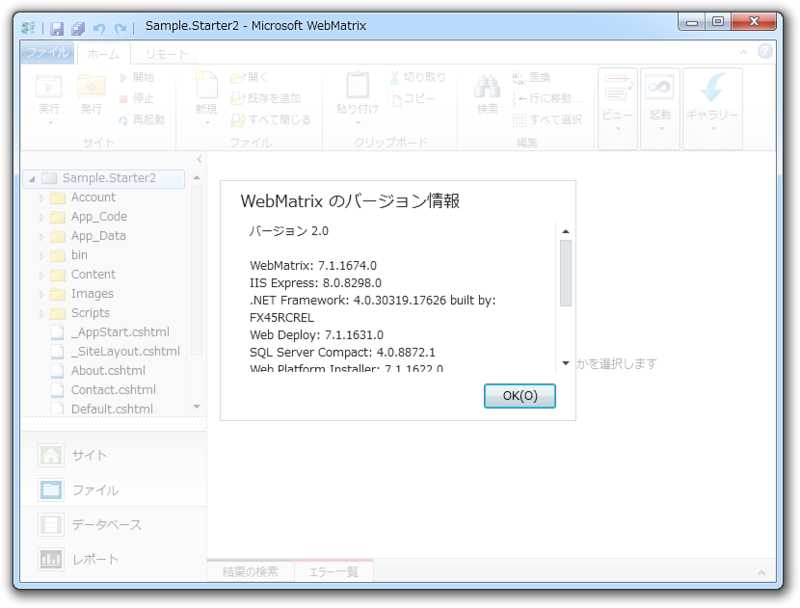
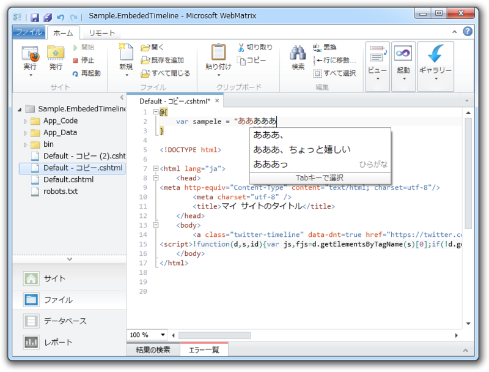
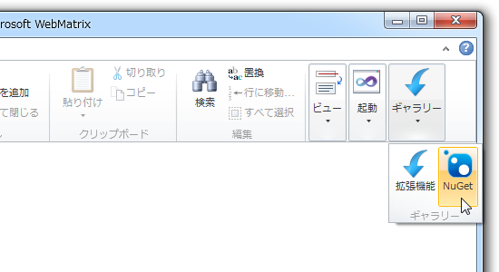
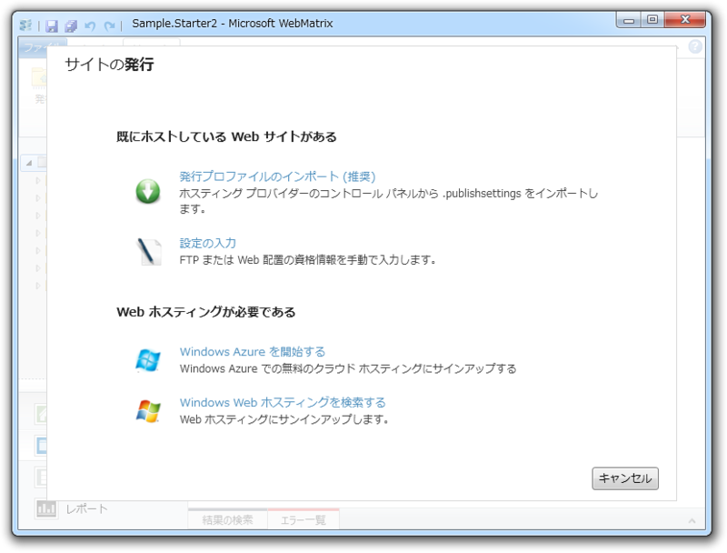
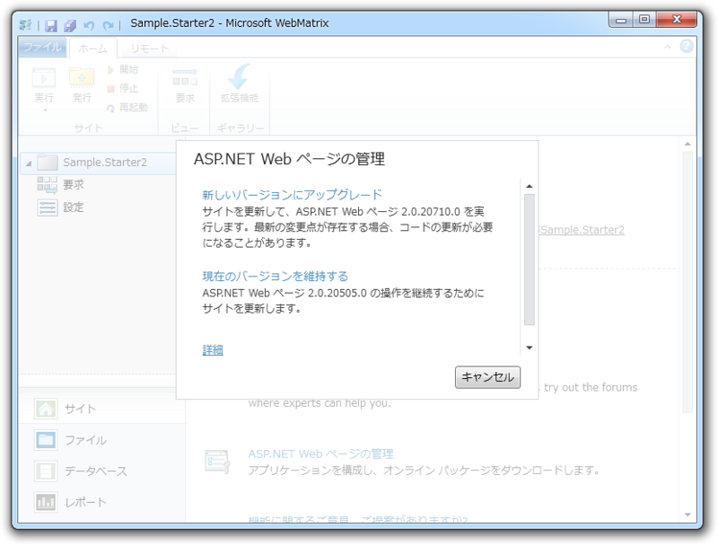
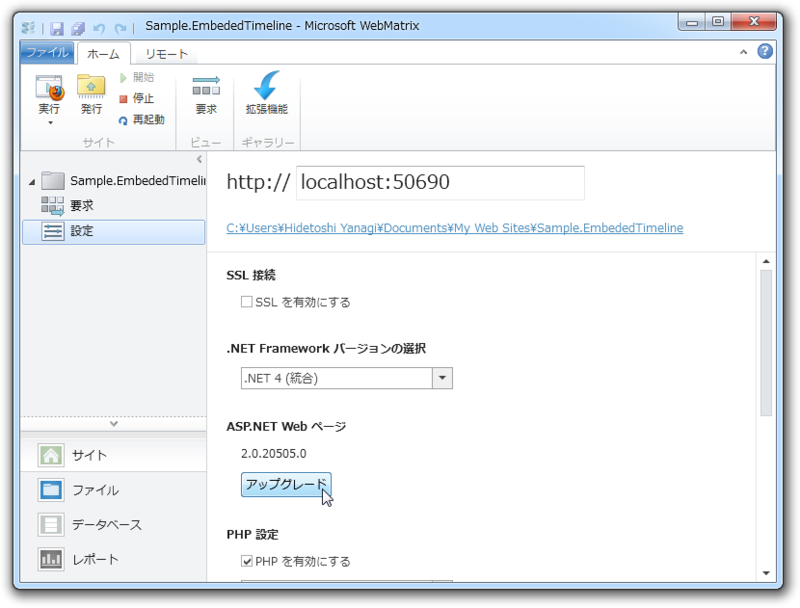
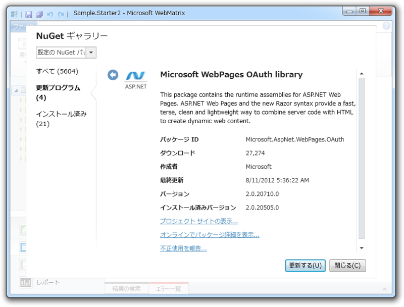
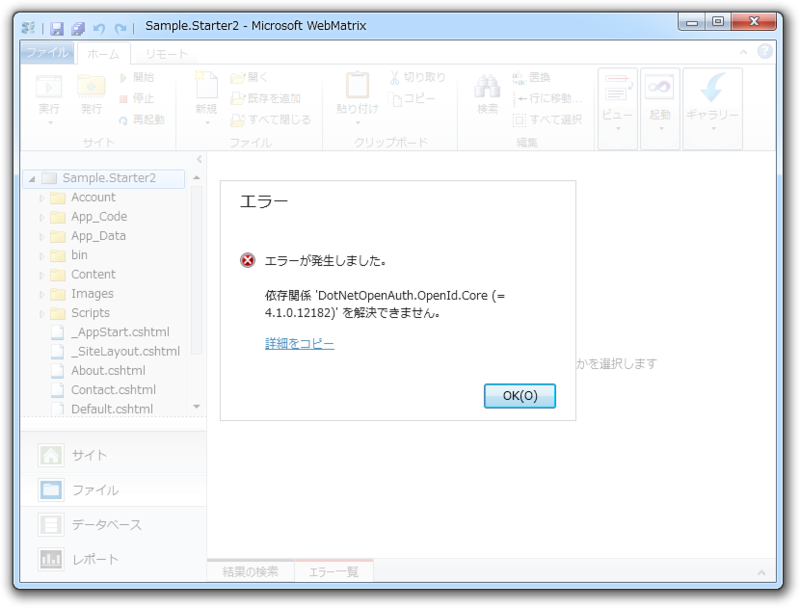
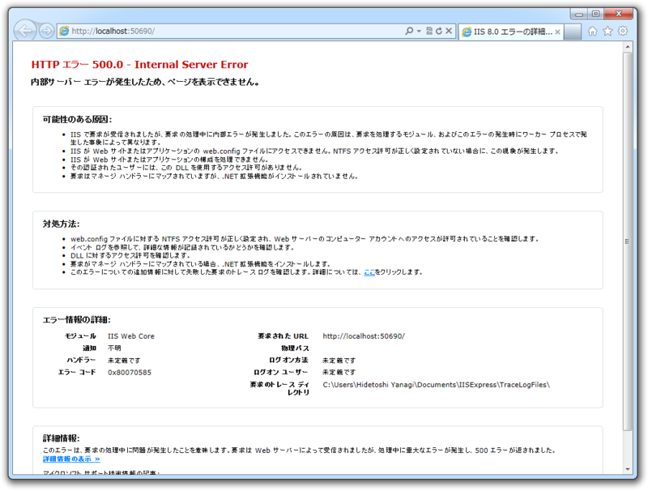

WebMatrix 2 RTM ファーストインプレッション
公開日：

「Microsoft WebMatrix 2」が正式版に……ガッデム／(^o^)＼ - だるろぐ でファーストインプレッションをすっかり書くのを忘れていた。テンプレートからサイトが新規に作成できない問題はすでにフォーラムへ報告しておいたので、既存の Web サイトを開いてみてほかに気付いた点を。
テキストエディターはかなりよくなった
WebMatrix2はパフォーマンスがかなり改善されてます。ときどきやたら反応が重かった問題に対応されてますので、ぜひお試しを
— 帝国兵 (@superriver) 2012年9月6日
少し使ってみたけれど、クリップボードへのコピーでもたついたり、ときどきかなり遅くなったり、挙げ句の果てはクラッシュするといったエディター関連の問題はかなり解消されたみたい。

あと、［Alt］キーでメニューのナビゲーションが出るのだけれど、そっちにフォーカスがとられて矩形選択や IME の切り替えに支障が出るのもなおしてほしいところかな。
あんまり期待していなかったこの問題も見事に解消されていた。

IME の切り替えで［Alt］＋［~］を利用しても、メニューナビゲーションにキーボードのフォーカスが奪われることがなくなった。最悪「そっちのキーバインド変えれば済むだろ」と言われるのを覚悟していたので、ちょっと嬉しい。
［ギャラリー］ボタンの改良

ギャラリーボタンに「拡張機能」と「NuGet」がまとめられた。
ただ、これは［ファイル］セクションを開いている場合のみ。［サイト］セクションを開いているとドロップダウンが現れず、「拡張機能ギャラリー」がいきなり起動する。この動作の違いは、ちょっと戸惑う。最初だけだけどね。
リモートサイトの設定

前からこんなんだっけ？ ちょっと自信はないけれど、わかりやすくなったと思う。 WebMatrix はもう完全に“Widows Azure Web Sites のクライアント”という位置づけなのだなぁ。
コンポーネント・ライブラリのアップデート

リリース候補版で作った Web サイトを開くと、“APS.NET Web ページ”をアップデートするかと聞かれる。どちらも試してみたけれど、問題なくアップデートできる。

たぶん、あとからでもバージョンアップできるはず。［サイト］セクションの［設定］を開いてみよう。

しかし、“Starter Site”テンプレートの「Microsoft WebPages OAuth Library」をアップデートしようとすると、エラーが発生する。

これは WebMatrix のせいというわけではないのだけれど、 Microsoft がメンテしてるパッケージだよね……。まぁ、じきに直るんだろうけど。
Web サイトが開始できない

手元にあったリリース候補版のテンプレート（初期状態）で幾つか試したのだけれど、“APS.NET Web ページ”のアップデートいかんにかかわらず、すべて動かなかった。
どうもうちの環境ではいろいろ問題があるみたい。仕事柄プレリリースの製品をインストール・アンインストールする機会が多いので、そろそろダメになっているのかもしれない。まぁ、メイン PC も Windows 8 にしようかなぁと考えていたところなので、その後もう一度試してみるかな。